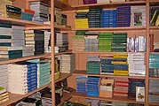

Components
|
Components
Schools need seven components to implement the performance based assessment system
Active learning:
- Discussion-based classrooms
- Project-based assignments
- Original research and experiment design
- Student choice embedded in course work
- Transcripts of previous school history including attendance and grades
- An intake process that includes interview and writing samples
- Cumulative documentation: attendance, course performance, tests
- Student reports
- Parent teacher conferences
- Staff review of work patterns and work products
- Feedback on written work
- Narrative reports
- Student teacher conferences
- Parent teacher conferences
- After-school homework labs
- Peer tutoring
- Writing: literary essays, research papers, playwriting, poetry, lyrics
- Oral presentations: discussions, debate, poetry reading, dramatic presentation, external presentations
- Artistic renderings: sculpture, painting, drawing, photography
- Analytic literary essay
- Social studies research paper
- Original science experiment
- Application of higher level mathematics
- Experts in various disciplines (such as writers, scientists, historians)
- Other interested evaluators (such as teachers from other schools)
- PAR Board members
- School-based and center-based workshops which strengthen inquiry-based teaching
- Sessions reviewing student work and teacher assignments
- Opportunities to critique student presentations and scoring procedures
- Mentoring of less experienced teachers by master teachers
- Refining rubrics and reviewing performance assessment processes
- Support for school-based research
|  | ||||
|
||||